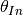
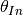
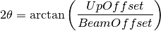

SpecularReflectionCalculateTheta dialog.
Table of Contents
Calculate the specular reflection two theta scattering angle (degrees) from the detector and sample locations .
| Name | Direction | Type | Default | Description |
|---|---|---|---|---|
| InputWorkspace | Input | MatrixWorkspace | Mandatory | An Input workspace to calculate the specular relection theta on. |
| AnalysisMode | Input | string | PointDetectorAnalysis | The type of analysis to perform. MultiDetectorAnalysis, LineDetectorAnalysis or MultiDetectorAnalysis. Used to help automatically determine the detector components to move. Allowed values: [‘PointDetectorAnalysis’, ‘LineDetectorAnalysis’, ‘MultiDetectorAnalysis’] |
| DetectorComponentName | Input | string | Name of the detector component i.e. point-detector. If these are not specified, the algorithm will attempt lookup using a standard naming convention. | |
| SampleComponentName | Input | string | Name of the sample component i.e. some-surface-holder. If these are not specified, the algorithm will attempt lookup using a standard naming convention. | |
| SpectrumNumbersOfDetectors | Input | int list | A list of spectrum numbers making up an effective point detector. | |
| StrictSpectrumChecking | Input | boolean | True | Enable, disable strict spectrum checking. Strict spectrum checking protects against non-sequential integers in which spectrum numbers are not in {min, min+1, ..., max} |
| TwoTheta | Output | number | Calculated two theta scattering angle in degrees. |
Uses the Specular reflection condition  to calculate and return a corrected .
to calculate and return a corrected .

The calculated  value in degrees is returned by the algorithm.
value in degrees is returned by the algorithm.
Also see SpecularReflectionPositionCorrect v2
For version 1 of the algorithm, please see
SpecularReflectionCalculateTheta-v1.. Note
that version 1 worked with detectors at  rather than
for historical reasons.
rather than
for historical reasons.
Example - Point detector theta calculation
# Set up an instrument with a 45 degree final two theta angle.
import os
instrument_def = os.path.join( config.getInstrumentDirectory() , "INTER_Definition.xml")
ws = LoadEmptyInstrument(instrument_def)
inst = ws.getInstrument()
ref_frame = inst.getReferenceFrame()
upoffset = ref_frame.vecPointingUp()
det_position = {ref_frame.pointingUpAxis(): 1.0, ref_frame.pointingAlongBeamAxis(): 1.0, ref_frame.pointingHorizontalAxis():0}
MoveInstrumentComponent(ws, 'point-detector',RelativePosition=False, **det_position)
MoveInstrumentComponent(ws, 'some-surface-holder',RelativePosition=False, X=0, Y= 0, Z=0)
# Calculate the two theta.
two_theta = SpecularReflectionCalculateTheta(InputWorkspace=ws, DetectorComponentName='point-detector', AnalysisMode='PointDetectorAnalysis')
print(two_theta)
Output:
45.0
Categories: AlgorithmIndex | Reflectometry
C++ source: SpecularReflectionCalculateTheta2.cpp (last modified: 2019-06-05)
C++ header: SpecularReflectionCalculateTheta2.h (last modified: 2018-10-05)